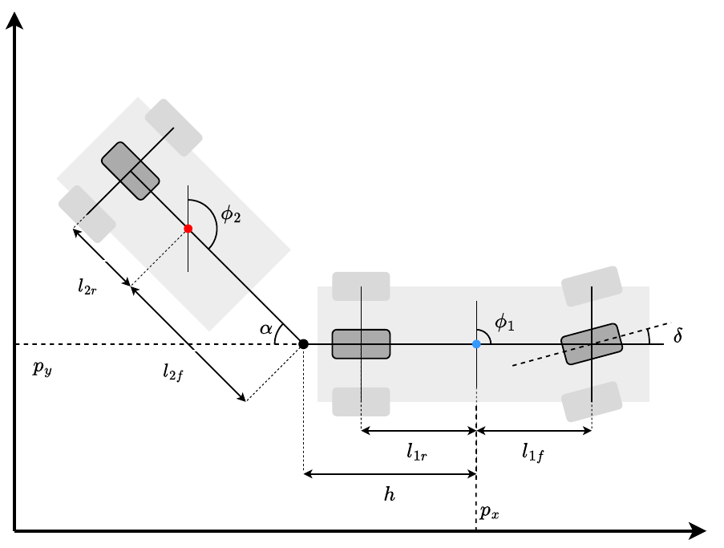
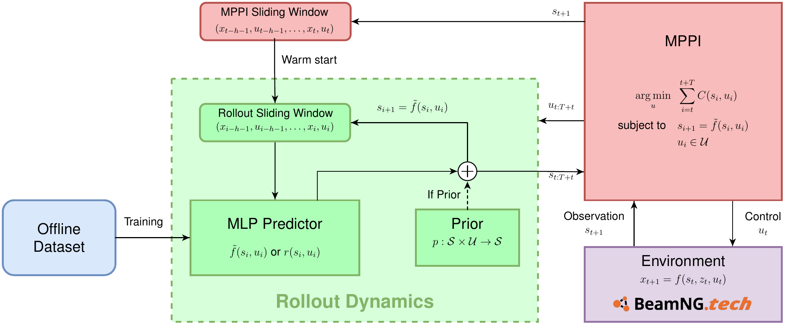
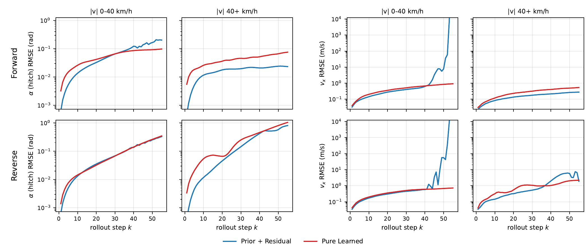
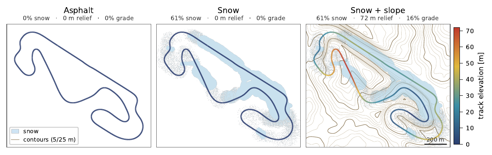
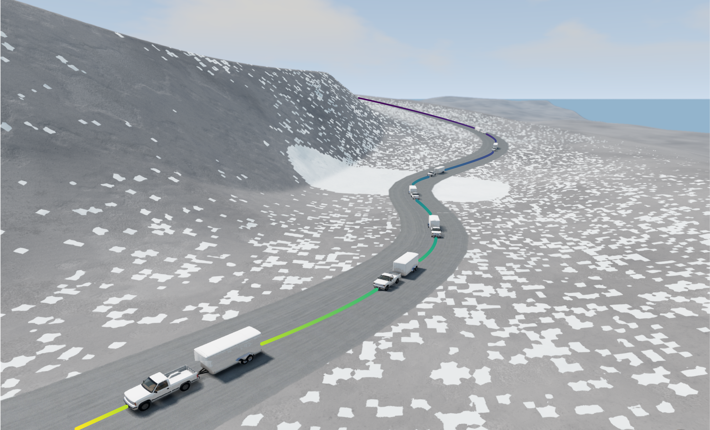

Track the target speed
Reach the commanded forward or reverse velocity without stalling.
University of Michigan · *Equal contribution
High-speed forward & reverse driving · BeamNG.tech unknown dynamics · Variable terrain

We study high-speed forward and reverse tractor–trailer control in BeamNG.tech, a high-fidelity soft-body simulator whose suspension, load transfer, road friction, terrain, and powertrain effects are unavailable to the analytic model. Our learned dynamics model uses recent state-action history to infer these hidden influences during control.
We compare a fully learned MLP with a residual model built on a reduced-order Fiala-tire prior. The fully learned model delivers more consistent long-horizon behavior and stronger closed-loop tracking, particularly in reverse and when terrain changes are not represented in its training data.
Maintain stable high-speed motion when vehicle and terrain dynamics are only partially observed.
Reach the commanded forward or reverse velocity without stalling.
Keep the tractor–trailer articulation bounded to avoid jackknife.
Adapt rollouts to changing friction, slope, and banking from history alone.
Tractor–trailer systems offer a demanding setting for learned dynamics: the vehicle is nonlinear and underactuated, while the passive trailer can rapidly destabilize the overall system near its handling limits.
The tractor is actuated, but the trailer is not. Steering the tractor changes the hitch angle and trailer motion through a rigid mechanical coupling that is difficult to stabilize.
In reverse, small errors in the predicted motion can compound quickly into hitch-angle growth. At higher speeds, there is less time to correct before jackknife or track departure.
Road friction, slope, banking, suspension behavior, and payload-dependent effects are difficult to measure online, yet they substantially change how the vehicle responds.
This makes high-speed reverse driving over snowy, sloped terrain a direct test of whether a learned dynamics model can provide useful control predictions when the analytic prior is incomplete.
Introduce a tractor–trailer model with Fiala brush tire forces as an interpretable dynamics baseline.
Compare fully learned model prediction against residual prediction from the physical prior.
Evaluate learned control under variable friction, terrain, and unknown vehicle dynamics in BeamNG.tech.
Our controller relies on learned state transitions that remain informative when high-fidelity vehicle effects and terrain variables are not directly measured.

A four-layer MLP with 128 units per layer consumes a four-step history of observed states and actions, then predicts the next system transition.
A second MLP predicts only the discrepancy from the Fiala-tire prior, testing whether the physical model improves the learned rollout.
The learned transition model is evaluated repeatedly during control, so its ability to represent changing traction and terrain directly affects stability.
The network has four hidden layers of 128 units and a four-step state-action history. It receives no explicit terrain, friction, or suspension state.
The history includes hitch configuration, body-frame velocity, yaw rates, commanded steering/acceleration, and their realized values.
The MLP predicts the next acceleration and realized-control response, learning effects caused by traction loss, grade, and unmodeled vehicle behavior.
Offline data spans target speeds and friction levels, with additional weaving trajectories that expose richer tire-force behavior.
Alongside the learned predictor, we derive a reduced-order model with Fiala brush tire forces. It exposes the physical coupling at the hitch and serves as an interpretable analytic prior.
The model state includes tractor position and yaw, trailer yaw, longitudinal and lateral tractor velocity, and the two yaw rates. The hitch angle is the difference between tractor and trailer yaw.
A rigid hitch couples tractor and trailer acceleration: tire forces, inertial effects, and body-frame motion terms are solved together at every rollout step. This coupling is what makes reverse driving especially sensitive to modeling error.
Lateral tire forces use a Fiala brush model, with slip-angle saturation governed by road friction, normal load, and cornering stiffness. This prior is used directly for baseline control and as the physics component of the residual formulation.
The trailer velocity is induced by tractor motion and trailer yaw rate, so accelerations cannot be solved independently.
At every rollout step, the coupled acceleration system is solved and then integrated forward to update the vehicle state.
Road friction, slopes, suspension, and other hidden effects perturb the analytic prior—exactly the gap the learned model is designed to absorb.
We evaluate forward and reverse driving on a Barcelona-Catalunya–shaped racetrack in BeamNG.tech. The simulator supplies unobserved soft-body, suspension, load-transfer, and terrain effects; Snow + slope is the critical transfer setting.
Uniform high-friction, flat pavement in the high-fidelity simulator. This nominal condition isolates unknown vehicle dynamics.
Noisy patches of low-friction snow interrupt an otherwise flat track, creating changing tire behavior under the same track geometry.
Snow patches combine with slope and banking—hidden terrain variables that are absent from the learned model’s training data and most challenging in reverse.
The fully learned model provides more stable open-loop behavior across velocity ranges and stronger closed-loop tracking, particularly in reverse and under terrain variation unseen during training.

The pure learned model avoids the analytic prior’s severe low-speed velocity spikes and has slower long-horizon error growth.
Across reverse tests, the learned controller reaches target speeds more consistently than the analytic-prior controller.
Performance remains strong when slope and banking are introduced despite never appearing in the learned model’s training data.

